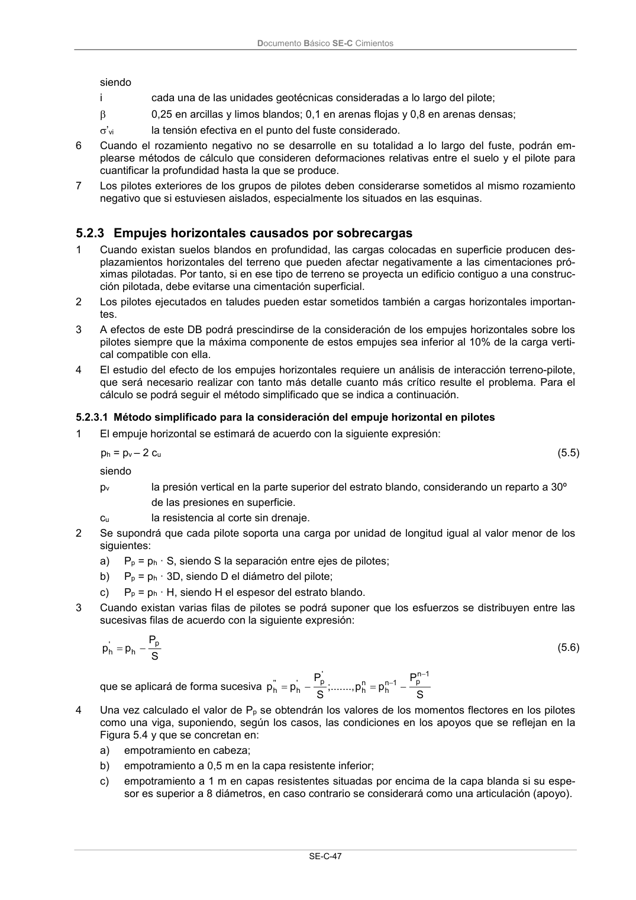

DB-SE-C Cimientos · edición 2019-12-20 · capa oficial
Documento DB-SE-C-oficial · SHA-256 del PDF a71133f4b0dca253e45ea3071c70f2a512354bcc5cd841bf89b1a502f567ac5e
Copia fiel del PDF fuente · Fuente oficial
Ficha de la disposición en la fuente oficial
Formatos: JSON del segmento · Markdown
5.2.3 Empujes horizontales causados por sobrecargas 1 Cuando existan suelos blandos en profundidad, las cargas colocadas en superficie producen des- plazamientos horizontales del terreno que pueden afectar negativamente a las cimentaciones pró- ximas pilotadas. Por tanto, si en ese tipo de terreno se proyecta un edificio contiguo a una construc- ción pilotada, debe evitarse una cimentación superficial. 2 Los pilotes ejecutados en taludes pueden estar sometidos también a cargas horizontales importan- tes. 3 A efectos de este DB podrá prescindirse de la consideración de los empujes horizontales sobre los pilotes siempre que la máxima componente de estos empujes sea inferior al 10% de la carga verti- cal compatible con ella. 4 El estudio del efecto de los empujes horizontales requiere un análisis de interacción terreno-pilote, que será necesario realizar con tanto más detalle cuanto más crítico resulte el problema. Para el cálculo se podrá seguir el método simplificado que se indica a continuación.
